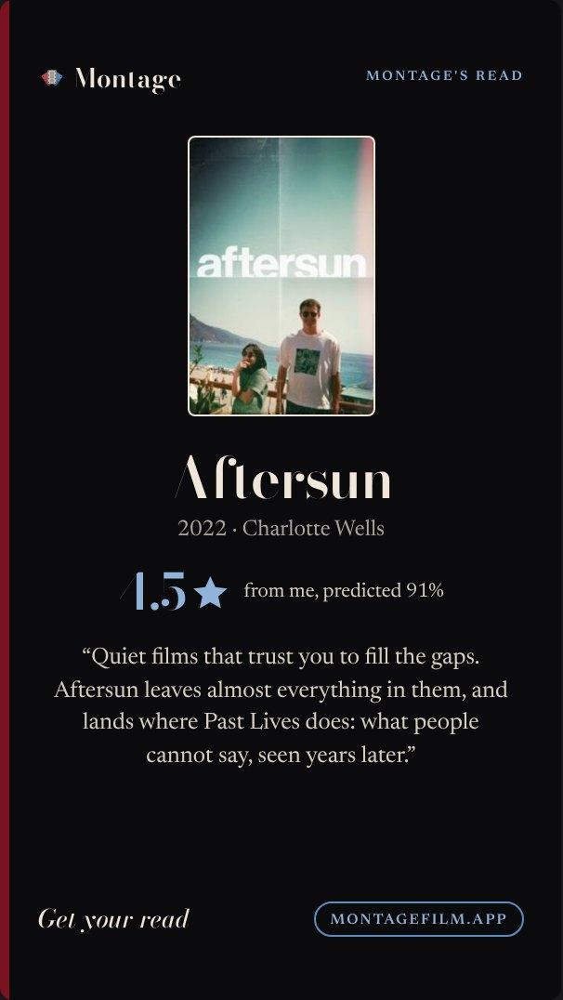
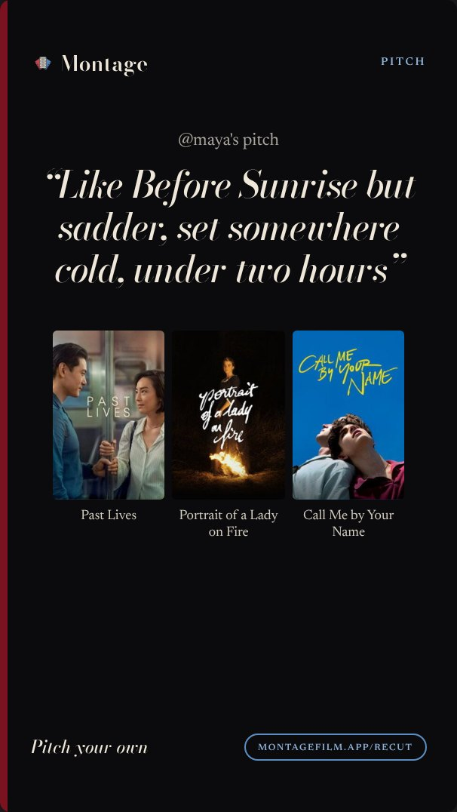

9 · Montage's read
Montage's read
/api/read-card · Story
- Layout kept. Spine: it is a read, and a spine is what a book has; no wall, so it has room.
- The poster is plain (its v3 cream keyline).
spine
v3

v4 · spine

Montage
Montage's read
Aftersun
2022 · Charlotte Wells
4.5
from me, predicted 91%
“Quiet films that trust you to fill the gaps. Aftersun leaves almost everything in them, and lands where Past Lives does: what people cannot say, seen years later.”
Get your read
montagefilm.app
10 · Pitch card
Pitch card
/api/recut/card/<id> · Story
- Owner likes it. Spine kept: typographic, no wall.
- The pitch is now Bodoni roman (was italic), weight 500 so it still reads as a voice, not a title.
spineplain row
v3

v4 · spine
Montage
Pitch
@maya's pitch
“Like Before Sunrise but sadder, set somewhere cold, under two hours”
Past Lives
Portrait of a Lady on Fire
Call Me by Your Name
Pitch your own
montagefilm.app/recut